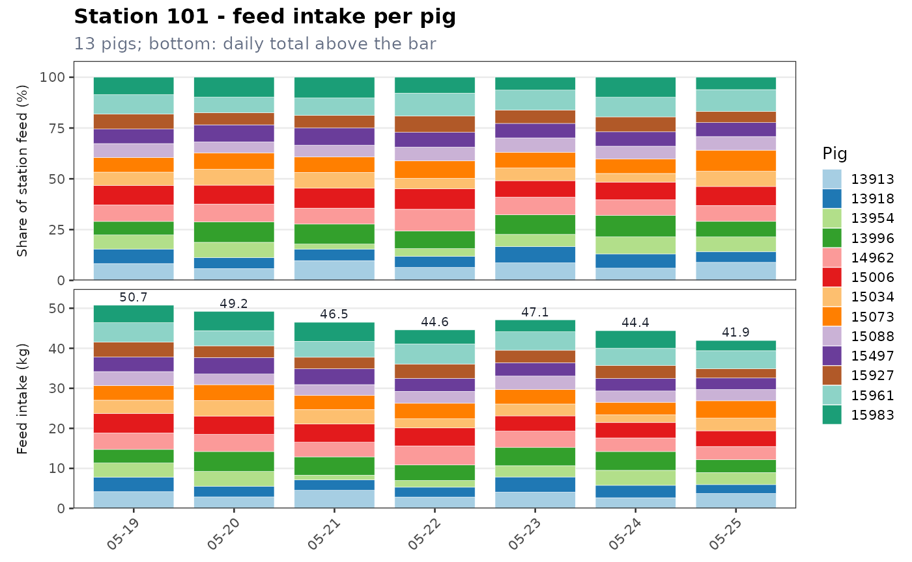

tidypptsdm watches the feeding stations of a pig performance test from day to day. It answers the questions of the daily round: is every station recording, are the transponders read, does every pig still eat, and how did feed intake and body weight develop over the last days?
The data are read and prepared with tidypptsda:
read_station() reads NEDAP or FIRE exports and
prep_visits() turns them into one standard visit table
(feed intake in g, body weight in kg, duration in seconds, unidentified
visits kept with identified = FALSE, pigs moved to another
station resolved). Both functions are re-exported, so
library(tidypptsdm) is enough.
library(tidypptsdm)
mon <- run_monitor(tidypptsda::nedap, days = 7, verbose = 0)
mon
#>
#> ── NEDAP monitor: 2024-05-19 to 2024-05-25 ─────────────────────────────────────
#> ℹ 2 stations, 28 pigs; on 2024-05-25: 366 visits, 84.8 kg feed
#> ✔ No alerts
#> Tables: $stations, $houses, $pigs, $pig_summary, $hours, $alerts. Write them
#> with write_monitor_report() or write_monitor_tables().Small internal tools shared by every function of the package:
verbose = 0/1/2 (silent / summary / details), as in
tidypptsda;as_visits() accepts a folder or
files, a raw export, the result of read_station() or of
prep_visits(), and always returns a copy, so user objects
are never modified;monitor_window() turns
days and end_date into the dates of the
monitoring window.run_monitor() is the function for the daily round. It
prepares the visits once, computes every table over the last
days days and lists the alerts of the last day. Its result
goes to write_monitor_report(),
write_monitor_tables() and plot_monitor().
The window ends on end_date. By default this is the last
day in the data; when that is today, it is the day before, because an
export taken during the day has an incomplete last day.
mon <- run_monitor(tidypptsda::nedap, days = 7)
#>
#> ── Preparing NEDAP visits ──────────────────────────────────────────────────────
#> Visits read 31,863
#> └ unidentified (kept, identified = FALSE) 211 0.7%
#> └ body weight 0 (set to NA) 391 1.2%
#> ℹ No pig was seen at more than one station
#> ✔ 30 pigs at 2 stations, 31,863 visits over 97 days 0.1s
#> ℹ No breed column. To use breed in the feed intake model and breed-specific limits, add it with `add_breed()`.
#>
#> ── Monitoring NEDAP stations: 2024-05-19 to 2024-05-25 (7 days) ────────────────
#> ℹ 2 stations, 28 pigs; on 2024-05-25: 366 visits, 84.8 kg feed
#> ✔ No alerts
mon$alerts
#> Empty data.table (0 rows and 6 cols): level,type,location,responder,value,message
head(mon$stations)
#> location date n_pigs n_visits n_unidentified pct_unidentified
#> <char> <Date> <int> <int> <int> <num>
#> 1: 101 2024-05-19 13 192 2 1.0
#> 2: 101 2024-05-20 13 201 4 2.0
#> 3: 101 2024-05-21 13 228 2 0.9
#> 4: 101 2024-05-22 13 214 3 1.4
#> 5: 101 2024-05-23 13 234 1 0.4
#> 6: 101 2024-05-24 13 154 1 0.6
#> occupation_h feed_kg feed_per_pig_kg weight_kg pct_weight_outlier
#> <num> <num> <num> <num> <num>
#> 1: 13.88 50.923 3.903 126.83 3.7
#> 2: 13.38 49.585 3.786 128.02 6.6
#> 3: 12.54 46.784 3.576 128.81 7.1
#> 4: 12.63 44.780 3.429 130.49 6.2
#> 5: 13.22 47.120 3.624 131.21 9.0
#> 6: 12.66 44.424 3.415 132.80 7.2Each table has one row per unit and day of the window, also for days without any visit (counts are then 0). That is what makes a station that stopped recording, or a pig that stopped eating, visible.
st <- monitor_stations(tidypptsda::nedap, days = 7, verbose = 0)
st
#> location date n_pigs n_visits n_unidentified pct_unidentified
#> <char> <Date> <int> <int> <int> <num>
#> 1: 101 2024-05-19 13 192 2 1.0
#> 2: 101 2024-05-20 13 201 4 2.0
#> 3: 101 2024-05-21 13 228 2 0.9
#> 4: 101 2024-05-22 13 214 3 1.4
#> 5: 101 2024-05-23 13 234 1 0.4
#> 6: 101 2024-05-24 13 154 1 0.6
#> 7: 101 2024-05-25 13 204 4 2.0
#> 8: 102 2024-05-19 15 163 0 0.0
#> 9: 102 2024-05-20 15 167 2 1.2
#> 10: 102 2024-05-21 15 216 2 0.9
#> 11: 102 2024-05-22 15 238 2 0.8
#> 12: 102 2024-05-23 15 158 9 5.7
#> 13: 102 2024-05-24 15 118 3 2.5
#> 14: 102 2024-05-25 15 162 2 1.2
#> occupation_h feed_kg feed_per_pig_kg weight_kg pct_weight_outlier
#> <num> <num> <num> <num> <num>
#> 1: 13.88 50.923 3.903 126.83 3.7
#> 2: 13.38 49.585 3.786 128.02 6.6
#> 3: 12.54 46.784 3.576 128.81 7.1
#> 4: 12.63 44.780 3.429 130.49 6.2
#> 5: 13.22 47.120 3.624 131.21 9.0
#> 6: 12.66 44.424 3.415 132.80 7.2
#> 7: 12.30 42.030 3.226 133.57 10.5
#> 8: 15.26 58.752 3.917 123.13 6.1
#> 9: 15.71 56.385 3.757 124.28 8.5
#> 10: 13.39 47.664 3.176 124.70 7.9
#> 11: 15.24 53.857 3.589 125.29 6.8
#> 12: 12.39 50.520 3.361 125.58 6.7
#> 13: 15.15 55.163 3.675 128.28 8.7
#> 14: 11.77 42.784 2.851 129.64 10.0
wide_table(st, "feed_kg")
#> Key: <location>
#> location 05-19 05-20 05-21 05-22 05-23 05-24 05-25 total
#> <char> <num> <num> <num> <num> <num> <num> <num> <num>
#> 1: 101 50.923 49.585 46.784 44.780 47.12 44.424 42.030 325.646
#> 2: 102 58.752 56.385 47.664 53.857 50.52 55.163 42.784 365.125A house is a group of stations, named by the first
house_width characters of the station ID.
monitor_houses(tidypptsda::nedap, days = 5, verbose = 0)
#> house date n_stations n_pigs n_visits feed_kg feed_per_pig_kg
#> <char> <Date> <int> <int> <int> <num> <num>
#> 1: 1 2024-05-21 2 28 444 94.448 3.362
#> 2: 1 2024-05-22 2 28 452 98.637 3.515
#> 3: 1 2024-05-23 2 28 392 97.640 3.483
#> 4: 1 2024-05-24 2 28 272 99.587 3.554
#> 5: 1 2024-05-25 2 28 366 84.814 3.025
#> weight_kg
#> <num>
#> 1: 126.50
#> 2: 127.62
#> 3: 128.08
#> 4: 130.36
#> 5: 131.39
pigs <- monitor_pigs(tidypptsda::fire, days = 7, verbose = 0)
pigs[status != "ok"]
#> location responder date n_visits feed_kg occupation_min weight_kg
#> <char> <char> <Date> <int> <num> <num> <num>
#> 1: 102 35857 2024-02-22 2 -0.012 7.8 118.4
#> 2: 102 35860 2024-02-22 4 0.006 5.6 122.8
#> 3: 102 35861 2024-02-22 4 0.096 12.3 137.2
#> 4: 102 35882 2024-02-22 4 0.300 8.9 131.7
#> 5: 102 35883 2024-02-22 2 0.004 0.5 NA
#> status
#> <char>
#> 1: low_feed
#> 2: low_feed
#> 3: low_feed
#> 4: low_feed
#> 5: low_feed
h <- monitor_hours(tidypptsda::nedap, verbose = 0)
wide_table(h, "n_visits")
#> Key: <location>
#> location 00 01 02 03 04 05 06 07 08 09 10
#> <char> <int> <int> <int> <int> <int> <int> <int> <int> <int> <int> <int>
#> 1: 101 3 6 9 4 2 5 10 10 12 17 13
#> 2: 102 9 1 5 5 1 4 6 10 8 9 9
#> 11 12 13 14 15 16 17 18 19 20 21 22
#> <int> <int> <int> <int> <int> <int> <int> <int> <int> <int> <int> <int>
#> 1: 12 9 4 10 17 15 17 14 9 6 0 0
#> 2: 10 3 1 13 10 10 13 13 13 9 0 0
#> 23 total
#> <int> <num>
#> 1: 0 204
#> 2: 0 162The daily tables are long: one row per unit and day.
wide_table() turns one column into a table with the units
in rows and the days (or hours) in columns, as in the Excel
workbook.
mon <- run_monitor(tidypptsda::nedap, verbose = 0)
wide_table(mon$stations, "n_visits")
#> Key: <location>
#> location 05-19 05-20 05-21 05-22 05-23 05-24 05-25 total
#> <char> <int> <int> <int> <int> <int> <int> <int> <num>
#> 1: 101 192 201 228 214 234 154 204 1427
#> 2: 102 163 167 216 238 158 118 162 1222
wide_table(mon$pigs, "feed_kg")
#> Key: <location, responder>
#> location responder 05-19 05-20 05-21 05-22 05-23 05-24 05-25 total
#> <char> <char> <num> <num> <num> <num> <num> <num> <num> <num>
#> 1: 101 13913 4.175 2.858 4.514 2.832 4.068 2.665 3.717 24.829
#> 2: 101 13918 3.655 2.685 2.619 2.467 3.792 3.107 2.231 20.556
#> 3: 101 13954 3.505 3.681 1.168 1.664 2.796 3.738 3.015 19.567
#> 4: 101 13996 3.386 4.986 4.590 3.892 4.558 4.698 3.215 29.325
#> 5: 101 14962 4.124 4.278 3.635 4.764 4.075 3.402 3.290 27.568
#> 6: 101 15006 4.894 4.577 4.562 4.497 3.837 3.875 3.923 30.165
#> 7: 101 15034 3.294 3.850 3.612 2.264 2.937 1.878 3.135 20.970
#> 8: 101 15073 3.680 3.995 3.549 3.873 3.648 3.149 4.358 26.252
#> 9: 101 15088 3.458 2.650 2.672 2.994 3.343 2.811 2.815 20.743
#> 10: 101 15497 3.624 4.131 3.971 3.250 3.344 3.148 2.876 24.344
#> 11: 101 15927 3.739 2.937 2.867 3.581 3.118 3.250 2.305 21.797
#> 12: 101 15961 4.846 3.762 3.983 4.999 4.599 4.284 4.502 30.975
#> 13: 101 15983 4.364 4.832 4.750 3.502 2.994 4.385 2.561 27.388
#> 14: 102 13935 3.783 4.279 2.207 3.940 2.575 3.987 3.225 23.996
#> 15: 102 14260 4.488 3.790 2.989 3.132 4.760 4.014 3.035 26.208
#> 16: 102 14730 3.844 3.766 3.379 4.071 3.153 3.602 3.928 25.743
#> 17: 102 14751 2.636 3.173 2.236 2.988 2.839 3.189 1.835 18.896
#> 18: 102 14759 4.083 3.576 3.211 4.122 3.570 3.465 3.282 25.309
#> 19: 102 14903 4.611 3.506 3.795 3.617 4.132 3.535 3.128 26.324
#> 20: 102 14913 4.717 3.582 3.574 4.514 3.040 5.207 3.296 27.930
#> 21: 102 14915 3.571 3.521 2.333 3.225 3.468 2.991 1.609 20.718
#> 22: 102 14937 4.110 5.785 3.734 4.053 4.069 3.896 2.956 28.603
#> 23: 102 14969 5.269 3.881 4.175 3.288 4.418 2.935 3.631 27.597
#> 24: 102 15404 3.659 3.046 3.549 2.379 2.446 4.178 1.751 21.008
#> 25: 102 15496 3.596 4.522 4.474 4.767 3.119 4.265 4.458 29.201
#> 26: 102 15604 3.382 4.139 2.094 3.528 2.636 3.790 2.058 21.627
#> 27: 102 15626 2.869 2.849 2.721 3.019 2.534 2.209 2.590 18.791
#> 28: 102 15649 4.134 2.939 3.170 3.191 3.663 3.869 1.982 22.948
#> location responder 05-19 05-20 05-21 05-22 05-23 05-24 05-25 total
#> <char> <char> <num> <num> <num> <num> <num> <num> <num> <num>plot_monitor() draws one plot per station. There are
five types:
"trend": pigs, visits, unidentified visits, occupation
time, feed intake and body weight over the window; days without any
visit are shaded red;"intake": stacked bars of the feed intake of each pig
on each day: its share of the station’s feed (top) and kg (bottom), as
fid_monitor() of pptsdm drew them; pigs that did not visit
or ate too little on the last day are marked in the legend;"heatmap": feed intake of every pig on every day as a
heat map, with a cross for a day without visit and a circle for a
low-feed day;"weight": recorded body weights per day as box
plots;"hours": visits, occupation time and feed intake per
hour of the last day.
mon <- run_monitor(tidypptsda::nedap, verbose = 0)
plot_monitor(mon, "intake")$plot[[1]]
mon <- run_monitor(tidypptsda::nedap, verbose = 0)
dir <- file.path(tempdir(), "monitor_plots")
save_monitor_plots(plot_monitor(mon, "trend"), dir)
#> ✔ Saved 2 of 2 plots to /tmp/RtmpqqKEAm/monitor_plots
unlink(dir, recursive = TRUE)write_monitor_report() writes the monitor as a small
offline website, as write_report() does in tidypptsda: an
overview page with the alerts and a table of all stations, then one page
per station with its plots and its pigs. Turn the pages with the arrow
keys and type a pig ID to jump to its station.
mon <- run_monitor(tidypptsda::nedap, verbose = 0)
dir <- file.path(tempdir(), "monitor_report")
write_monitor_report(mon, dir)
#> ✔ Report of 2 stations written to /tmp/RtmpqqKEAm/monitor_report/index.html
unlink(dir, recursive = TRUE)
mon <- run_monitor(tidypptsda::nedap, verbose = 0)
dir <- file.path(tempdir(), "monitor_tables")
write_monitor_tables(mon, dir, format = "csv")
#> ✔ Wrote 6 CSV files to /tmp/RtmpqqKEAm/monitor_tables
unlink(dir, recursive = TRUE)schedule_monitor() writes an R script that reads the
export folder, runs the monitor and writes the report and the workbook
into a folder named after the last day. On Windows the script is
registered in the Task Scheduler (with the taskscheduleR package). On
Linux and macOS the function prints the line to add with
crontab -e.
folder <- file.path(tempdir(), "exports")
dir.create(folder, showWarnings = FALSE)
data.table::fwrite(tidypptsda::nedap, file.path(folder, "nedap.csv"))
out <- file.path(tempdir(), "monitor_runs")
script <- schedule_monitor(folder, out, days = 7, register = FALSE)
#> ✔ Monitor script written to /tmp/RtmpqqKEAm/monitor_runs/tidypptsdm_monitor.R
cat(readLines(script), sep = "\n")
#> # Written by tidypptsdm::schedule_monitor() on 2026-10-31 00:50
#> # Daily monitor of the testing stations: edit the settings below if needed.
#> mon <- tidypptsdm::run_monitor("/tmp/RtmpqqKEAm/exports", days = 7)
#> out <- file.path("/tmp/RtmpqqKEAm/monitor_runs", format(mon$settings$end_date))
#> tidypptsdm::write_monitor_report(mon, out)
#> tidypptsdm::write_monitor_tables(mon, out, format = "xlsx")
unlink(c(folder, out), recursive = TRUE)